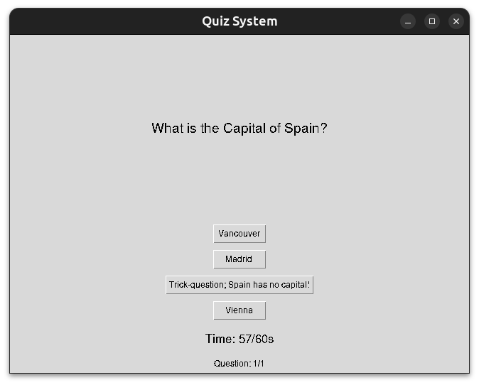

Python
This Python GUI project was orignally an assignment for COMP 218 at Athabasca University.
GUI-Based Quiz System

Interpretation
Goal: develop a GUI program that allows the user to create quizzes, add questions to those quizzes, take the quizzes after adding questions and receive a final score at the end of quiz. The Quiz program should also be able to preview the quizzes after creating questions.
Analysis of tasks - required techniques and algorithms to accomplish the goal.
Quiz and multiple choice question design:
Quiz_itemclass models multiple choice questions, with a question, set of choices and correct answer.- Besides a constructor, including methods to set the question, choices and answer after they’re created.
Quizclass models a quiz. Uses Quiz_item objects as quiz questions.- A method allows user to take the quiz, iterating through each quiz_item object in the quiz, displaying the question and the corresponding possible choices one by one. Allows the user to return the answer they believe to be correct.
- Once the quiz is complete, the user’s total score as a percentage and any corrections are displayed.
- Besides a constructor and the quiz taking method, other methods include: add a quiz_item objects to the quiz and preview all quiz item questions, choices and answers in a quiz.
GUI design and program logic:
QuizAppclass provides the GUI and methods for the program. UsesTkintermodule.- Main Menu:
- Create a new Quiz object, and add it to a dict of
quiz name:quiz objectpairs.
- Use a simple dialogue box to get user to input a name for the new quiz.
- Select a quiz from the quizzes dictionary.
- Dynamically create new buttons for each quiz in the quizzes dict. Buttons allow you to select a quiz to manage/execute.
- Create a new Quiz object, and add it to a dict of
- Quiz menu (upon selecting quiz)
- Add quiz_item objects to selected quiz
- Use entry boxes to collect the quiz_item question and choices attributes
- Use Radiobuttons to select the correct choice as the answer attribute.
- Validate the proposed Quiz_item object, create it if valid, and add it to the selected Quiz object.
- Preview the question, choices and correct answer for each quiz_item object for the select quiz.
- Iterate through the Quiz_items in the selected quiz, and return a formated string containing the question, choices and correct answer in a simple message box for each Quiz_item object.
- Return a warning message box if the quiz has no quiz_items in it
- Execute the selected quiz after adding quiz_item objects to it.
- First checks if selected quiz object has any quiz items.
- Presents questions for user to select the correct answer to one question at a time.
- Increment score variable for each correct answer
- Store quiz items answered correctly to find any corrections (if any) upon exiting the quiz.
- Dynamically update a label for each question in the quiz, to show the quiz question.
- Dynamically create buttons for each quiz question to allow user to pick an answer to the question.
- When taking the quiz, a countdown timer and a “Question [‘question number’] out of [‘total number of questions’]” label is visible to the user. If the countdown timer reaches zero, the user gets those questions wrong in the final score.
- Updated every second
- Quiz exit conditions:
- The number of questions answered by the user = the number of quiz_item objets in the quiz object; or,
- The timer reaches 0.
- Add quiz_item objects to selected quiz
- Upon exiting the quiz, display the final score as a percentage after the quiz is over, and all corrections if any.
- A method for clearing widgets from the parent window. Need to run this every time the user switches menus. Ran every time user changes menus, begins or finishes a quiz.
- “Return to previous menu” buttons should be available everywhere except for during the quiz.
- Main Menu:
Explanation of modules, classes, and functions
Modules:
tkinterpackage used to create the GUI components of the program.ttkmodule for aesthetically pleasing GUI componentssimpledialogandmessageboxmodules to open asktring and messagebox boxes for the user interface.
Classes:
Quiz_item - Models individual quiz items that can be added to quizzes.
Attributes:
question- The string containing the question.choices- A variable length argument containing the possible answers to the question.answer- The correct answer, validated to be one of the provided possible answers.
Methods:
set_question(new_question)- Updates the question description.set_choices(choice_number, new_choice)- Updates the specified possible choice.set_answer(new_answer)- Sets the correct answer, ensuring validity.preview()- Returns a string containing the question and choices of theQuiz_itemobjects.
Quiz - Models Quizzes, acting like collections of Quiz_item objects with additional methods and functionality.
Attributes:
quizItemList- A list ofQuiz_itemobjects.title- The title of the quiz.
Methods:
add_question(quizItem)- AddQuiz_itemobject to thequizItemList.display_questions()- Returns string of questions, choices and answers for GUI display.take_quiz- Executes quiz on user, returns final score calculation and all corrections if any.
QuizApp - Provides the GUI and methods for the program.
Attributes:
root- the parent window for the GUI application (which is initialized in the main execution)quizzes- a dictionary containing quizzes.main_menu_quizzes_frame- Frame widget containing main menu buttons to select quizcurrent_quizandcurrent_quiz_name- The selected quiz object and its nameanswer_var- Variable holding the user’s selected answer as an integerquestion_entry- the question of a new quiz itemchoices_entries- list containing choices of a new quiz itemscore- holds the score of as the user proceeds through a quizcurrent_question_index- holds the index of the current Quiz_item objects inquizItemListas the user proceeds through the quiztime_total- the total time the user has to take the quiz, in secondstime_remaining- the time remaining the user has to complete the quiz, max =time_totaland min = 0.timer_running_flag- flag set to False by default, set to True when Timer widget is activateduser_got_right- list of questions the user got right when taking the quiz.quiz_complete_flag- flag set to False by default, set to true when Quiz complete.timer- label widget acting as a countdown timer during the quiz.remaining_quiz_items- label widget listing the current question number and the total number of questions during the quiz.quiz_corrections_frame- Frame containing any corrections after the quiz is over.
Methods:
main_menu()- Displays the main menu.create_quiz()- Creates new quiz object and adds it to thequizzesdictionary.quiz_menu(quiz_name)- Opens quiz menu for the selected quiz, allows user to add questions, preview questions and take the quiz.add_question()- Menu with fields to create new quiz item object to be added to the selected quiz object.ssubmit_question()- Method to validate the quiz item object created inadd_questions.preview_quiz()- Opens a dialogue box that previews all quiz items in the selected quiz object.start_quiz()- Begins the interactive quiz program.display_question()- Starting with the first quiz item object, displays the questions and all choices for the user to select as the answer.check_answer(user_answer)- When user selects an answer indisplay_question(), compares it to the correct answer of the question and updates the user’s score accordingly.update_timer()- Updates thetimerto decrement by one every second. Also contains both exit conditions for the quiz: When the user answers every question and when the user runs out of time.show_results()- Shows the user their score as a percentage and their corrections to incorrectly or unanswered questions, if any.clear_window()- Clears all widgets off the parent window. This runs every time the user changes menus, and whenever a quiz is started or finished.
User Guide
Taking a Quiz
- Read the question, and click one of the buttons to select one of the choices as your answers.
- Timer and the number of remaining questions are visible at the bottom; make sure to manage your time.
- If the timer reaches 0, all unaswered questions are marked as incorrect.
Quiz Results
- Your score as a percentage, and corrections to any questions answered incorrectly (if any) are displayed.
- “Return to Main Menu” brings you to the main menu.
Code
# Importing dependencies
from tkinter import *
from tkinter.ttk import *
from tkinter import simpledialog, messagebox
# Define the Quiz_item class
class Quiz_item:
def __init__(self, question, *choices, answer): #4 attributes: the quiz item question, the possible choices and the correct answer
self.question = question
self.choices = list(choices)
if answer in self.choices: #making sure the provided answer is one of the provided choices...
self.answer = answer
else: #if not, raise ValueError
raise ValueError("The correct answer must be one of the choices")
def set_question(self, new_question): #method to set the question
self.question = new_question
def set_choices(self, choice_number, new_choice): #method to set choices
self.choices[choice_number - 1] = new_choice
def set_answer(self, new_answer): #method to set the answer
if new_answer in self.choices: #making sure the provided answer is one of the provided choices...
self.answer = new_answer
else: #if not, raise value Error
raise ValueError("The correct answer must be one of the choices")
def preview(self): #Method to return the question and choices (for the QuizApp class)
return f"{self.question}\n" + "\n".join(f"{i+1}. {choice}" for i, choice in enumerate(self.choices))
# returns a string containing the question, choices and the respective number of each choice (in the order provided)
# Define the Quiz class
class Quiz:
def __init__(self, title): #2 attributes: a list to contain quiz items, a title to describe the quiz
self.quizItemList = []
self.title = title
def add_question(self, quizItem): #Method to add Quiz item to quiz
if isinstance(quizItem, Quiz_item): # add quiz item to quiz item list
self.quizItemList.append(quizItem)
else: # if the argument is not a quiz item, raise ValueError
raise ValueError("The argument must be a Quiz_Item object")
def display_questions(self): #method that returns questions, to be used by QuizApp class
return "\n\n".join(f"Q{i+1}: {item.preview()}\nAnswer: {item.answer}" for i, item in enumerate(self.quizItemList))
def take_quiz(self): #method to execute quiz on user
score = 0 #initalize score var
incorrect_answers = {} #initialize incorrect answers dict
for i in self.quizItemList: #for every quiz item object in the quizitemlist attribute,
print(i.question) #print the question
for j in i.choices: #print every choice
print(j)
user_answer = input("") #accept user input
if user_answer == i.answer: #if the user input matches the answer:
score += 1 #increment score by 1
else: #else,
incorrect_answers.update({i.question:i.answer})# add the question:correct answer pair to the dict
print(f'You scored: {score/len(self.quizItemList)*100}%') #print final score as a percentage
for key, value in incorrect_answers.items(): #if any incorrect answers
print(f'Corrections: {key} - {value} ') #print the questio and correct answer
# GUI System
class QuizApp:
def __init__(self, root): #Takes the parent window as arg
self.root = root #parent window
self.quizzes = {} #intialize empty dict for quizzes
self.main_menu() #load main menu widgets
def main_menu(self): #method to load main menu features
self.clear_window() #clear all preview widgets (necessary when navigating to the main menu from any other menu)
Label(self.root, text="Saumi's Quiz App", font=("Arial", 20)).pack(pady=10) # Title label
Button(self.root, text="Create a Quiz", command=self.create_quiz).pack(pady=5) #Create Quiz Button, runs create_quiz on press
Label(self.root, text="Quizzes", font=("Arial", 14)).pack(pady=10) # "Quizzes" label; quizzes will land under this label when created
#Frame for quiz_menu buttons
self.main_menu_quizzes_frame = Frame(self.root)
self.main_menu_quizzes_frame.pack(pady=10)
for count, quiz_name in enumerate(self.quizzes):
Button(self.main_menu_quizzes_frame, text=quiz_name, command=lambda name=quiz_name: self.quiz_menu(name)).grid(row = count//3, column= count % 3)
# Iteratively create a button for each quiz; opens the respective quiz's quiz menu
# Lambda definition of quiz_name=name ensures the name argument for quiz_menu does not get overwritten when creating multiple quizzes
# eacch button organized in rows of three
Button(self.root, text="Exit", command=self.root.destroy).pack(pady=20,side="bottom") #exit button, quits program
def create_quiz(self): #method to add create a new quiz
quiz_name = simpledialog.askstring("Create Quiz", "Enter the name of the quiz:") #opens a dialogue box for user to input quiz name
if quiz_name: #as long as the user inputed non-emptry string (e.g. did not hit click cancel)
self.quizzes[quiz_name] = Quiz(quiz_name) #updates the quizzes dictionary with {quiz_name:Quiz-object} pair
messagebox.showinfo("Success", f"Quiz '{quiz_name}' created!") #gives user success message when new quiz is created
self.main_menu() #reload main menu to update quiz_menu buttons
def quiz_menu(self, quiz_name): #when a quiz button is clicked on the main menu:
self.current_quiz = self.quizzes[quiz_name] #store the selected Quiz object
self.current_quiz_name = quiz_name #store its name
self.clear_window() #clear windows
Label(self.root, text=f"Quiz: {quiz_name}", font=("Arial", 16)).pack(pady=10) #Label: "Quiz: [Quiz name]"
Button(self.root, text="Add Question", command=self.add_question).pack(pady=5) #Add question button; runs add_question to add new quiz item
Button(self.root, text="Preview Quiz", command=self.preview_quiz).pack(pady=5) #Preview Quiz button; runs preview_quiz to display attributes of quiz items in current Quiz objecta
Button(self.root, text="Start Quiz", command=self.start_quiz).pack(pady=5) #Start Quiz button; runs start_quiz to take the quiz after adding questions
Button(self.root, text="Back to Main menu", command=self.main_menu).pack(pady=20, side="bottom") #Return to main menu button; runs main_menu
def add_question(self): #When Add Question is clicked in quiz_menu:
self.clear_window() #clear windows
self.answer_var = IntVar() #Initialize IntVar for the selected answer
# Question Label and Entry
Label(self.root, text="Enter Question:", font=("Arial", 12)).grid(row=0, column=0, columnspan=2, padx =10, pady=10, sticky="w")
self.question_entry = Entry(self.root, width=50) #entry box to enter the quiz question
self.question_entry.grid(row=1, column=0, columnspan=2, padx=10, pady=5)
Label(self.root, text="Enter Choices, and select correct answer:", font=("Arial", 12)).grid(row=2, column=0, columnspan=2, padx = 10, pady=10, sticky="w")
# Choices Entry and Radio Buttons
self.choice_entries = [] #intialize list to contain choices entered by user
for i in range(4): #Create 4 entry boxes to enter choices to the question, and 4 respective radiobuttons to select the correct choice
Radiobutton(self.root, variable=self.answer_var, value=i - 1).grid(row=3 + i, column=0, padx=5, pady=5, sticky="w")
choice_entry = Entry(self.root, width=40)
choice_entry.grid(row=3 + i, column=1, padx=10, pady=5, sticky="w")
self.choice_entries.append(choice_entry) #Appends each entered choice to choice_entries attribute
# Submit and Cancel Buttons
Button(self.root, text="Submit", command=self.submit_question).grid(row=7, column=0, padx=10, pady=20, sticky="e") #submit button; runs submit_question to save entered quiz item data to the currentQuiz object
Button(self.root, text="Cancel", command= lambda: self.quiz_menu(self.current_quiz_name)).grid(row=7, column=1, padx=10, pady=20, sticky="w")
# cancel button, returns user to the quiz menu for the selected quiz
def submit_question(self): #When submit button is clicked in add question menu:
question = self.question_entry.get() #return and store the entered question text
choices = [entry.get() for entry in self.choice_entries] #return and store the entered choices text in for each choice in the list
correct_choice_index = self.answer_var.get() + 1 #return and store the correct choice number
# Validation
if not question.strip():
messagebox.showerror("Error", "Question cannot be empty!") #Open message box if question entry box is empty
return
if not all(choices) or len(set(choices)) < len(choices): #if any of the choice entry boxxes are empty or repeats:
messagebox.showerror("Error", "All choices must be filled and unique!") # show error message box
return
if correct_choice_index < 0 or correct_choice_index >= len(choices): #if no correct choice radiobutton is ticked:
messagebox.showerror("Error", "Please select a valid correct answer!") # show error message box
return
# Add the question to the quiz
self.current_quiz.add_question(Quiz_item(question, *choices, answer=choices[correct_choice_index])) #user quiz_item and Quiz methods to add quiz item to the selected quiz
messagebox.showinfo("Success", "Question added!") # open success message
#return to selected quiz quiz menu
self.quiz_menu(self.current_quiz_name)
def preview_quiz(self): #when preview quiz button is clicked on quiz menu:
preview = self.current_quiz.display_questions() #runs the display_questions method of the Quiz class, save what the returned string
if preview: #if the preview string is not empty:
messagebox.showinfo("Preview Quiz", preview) #open a messagebox showing all the quiz items for the selected quiz
else: #if the preview string is empty, no quiz items have been added to the selected quiz object:
messagebox.showinfo("Preview Quiz", "No questions added yet!") #warn user of this
def start_quiz(self): #when Start Quiz button is clicked on quiz menu:
if not self.current_quiz.quizItemList: #if current quiz object has no quiz items:
messagebox.showerror("Error", "No questions in the quiz!") #return error box
return
#Initializing variables
self.score = 0
self.current_question_index = 0
self.time_total = 60 #time to take quiz in seconds
self.time_remaining = self.time_total
self.timer_running_flag = False
self.user_got_right = []
self.quiz_complete_flag = False
#run display_question
self.display_question()
def display_question(self): # ran after start quiz, and after each time a user answers a question in the quiz
self.clear_window() #clear window
#quiz complete exit condition: when user answers all questions
if self.current_question_index == len(self.current_quiz.quizItemList):
self.quiz_complete_flag = True #set quiz complete flag to True to indicate the quiz was completed
print("Quiz complete quiz_complete_flag triggered") #terminal message to monitor quiz functionality
return
#Quiz questions label
quiz_item = self.current_quiz.quizItemList[self.current_question_index] #In the order they were created, save the current quiz item in the current quiz
Label(self.root, text=quiz_item.question, font=("Arial", 14)).pack(pady=10, expand=True) #label displaying the question attribute of the current quiz item
#Quiz choices buttons
for i, choice in enumerate(quiz_item.choices): #for each choice in the current quiz item object, create a button to select that choice as the answer
Button(self.root, text=choice, command= lambda c=choice : self.check_answer(c)).pack(pady=5)
#when clicked run check_answer to update the user's score
self.current_question_index += 1 #increment to the next quiz item object (in the order they were created)
# Timer label
self.timer = Label(self.root, text=f"Time: {self.time_remaining}/{self.time_total}s", font="Arial")
self.timer.pack(pady=10)
if self.timer_running_flag == False: #this test ensures only one instance of update_timer is called
self.timer_running_flag = True
self.update_timer()
# Quiz items remaining label
self.remaining_quiz_items = Label(self.root, text=f"Question: {self.current_question_index}/{len(self.current_quiz.quizItemList)}") #remaining questions label below timer: "Question: [current quiz number]/[lenght of quiz]"
self.remaining_quiz_items.pack(pady=5)
def check_answer(self, user_answer): #ran after user selects a choice during the quiz
quiz_item = self.current_quiz.quizItemList[self.current_question_index - 1] #take the current quiz item of the current quiz object
if user_answer == quiz_item.answer: #if the user's answer matches the answer attribute
self.score += 1 #increment the score attribute
self.user_got_right.append(quiz_item) #append the quiz item to a list of questions the user answered correctly
self.display_question() #rerun display question to go to next question/end quiz
def update_timer(self): #runs the first time display_question is called
if self.time_remaining == 0 and self.quiz_complete_flag == False: #timeout exit condition; when the timer reaches 0 without completing every question
print("Quiz timeout exit") #progress tracking terminal message
return self.show_results() #quiz finished; call show results to finish quiz
if self.time_remaining > 0 and self.quiz_complete_flag == False: #when timer is above 0, and user has not completed the quiz
self.time_remaining -= 1 #decrement time remaining lavariable bel by 1
self.timer.config(text=f"Time: {self.time_remaining}/{self.time_total}s", font="Arial") #update the timer label to reflect this change in time
self.root.after(1000, self.update_timer) #after a delay of 1000ms (i.e. 1 second), rerun update timer
elif self.quiz_complete_flag == True: #when quiz complete exit condition is met,
print("Quiz complete exit") #print progress tracking terminal message
return self.show_results() #quiz finished; call show results to finish quiz
def show_results(self): #called when quiz is complete
self.clear_window() #clear window
percentage = (self.score / len(self.current_quiz.quizItemList)) * 100 #calculate user's score as a percentage
Label(self.root, text=f"Your Score: {round(percentage, 2)}%", font=("Arial", 16)).pack(pady=10) #label dispalying user score
user_got_wrong = [items for items in self.current_quiz.quizItemList if items not in self.user_got_right] #find the complement of the set of correctly answered quiz items; quiz items either answered incorrectly or unanswered due to timeout.
Label(self.root, text="Corrections", font=("Arial", 14)).pack(pady=10) #Corrections header label
self.quiz_corrections_frame = Frame(self.root) #frame to contain corrections if any
self.quiz_corrections_frame.pack(pady=3)
if user_got_wrong: #if the list of items the user missed or answered incorrectly is not empty:
for i in range(len(user_got_wrong)): #for the number of items in the length of the user_got_wrong list:
Label(self.quiz_corrections_frame, text=f'Question: {user_got_wrong[i].question}\nAnswer: {user_got_wrong[i].answer}').grid(row = i//3, column= i % 3, padx=5, pady=5)
# print a label containing the quiz item question and correct answer of the quiz items the user missed
#exit button to return to main menu
Button(self.root, text="Back to Main Menu", command=self.main_menu).pack(pady=20,side="bottom")
def clear_window(self): #this function runs everytime the window needs to change what its displaying (i.e., every menu change, and every question answered)
for widget in self.root.winfo_children(): #for widgets in the parent window:
widget.destroy() #remove widgets
# Main Execution
root = Tk() #parent window
root.title("Quiz System") # parent window title
root.geometry("800x700") # size of parent window
quiz_system = QuizApp(root) #creating instance of QuizApp
root.mainloop() #executing the program